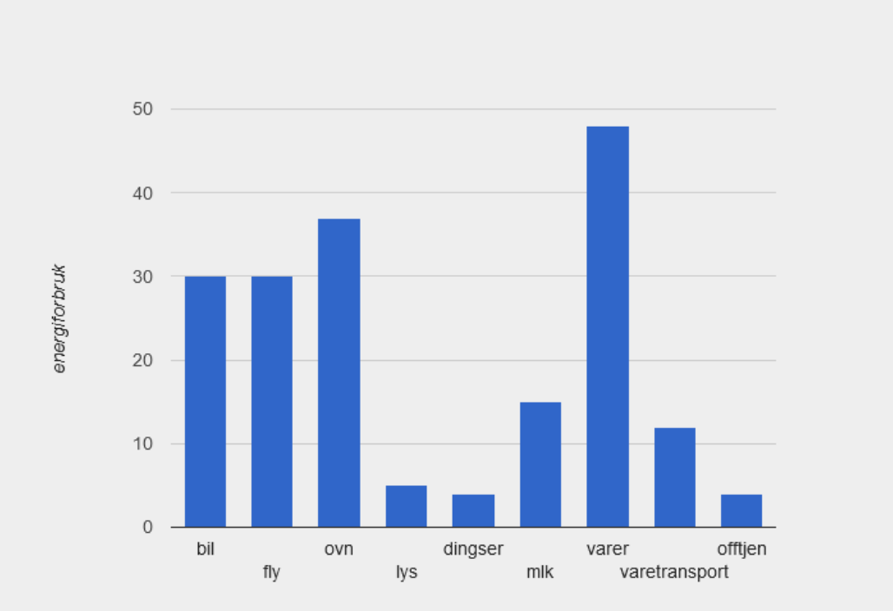

Heyo, jeg er Mathias. Jeg liker å spille, er fra Sandnes.
Lat som jeg skrev noe betydningsfullt her
Laget en egen funksjon for å beregne energiforbruket for bil.
Tok i bruk funksjonen "energy-per-day". Valgte en distanse på 45 km per dag, og at bilen kjører 15 km per liter, og en energi på 10.
